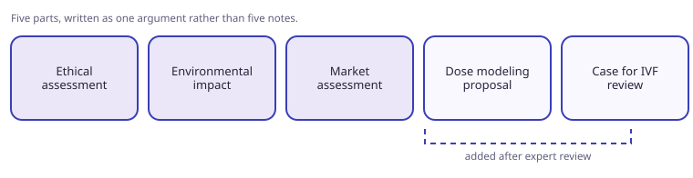
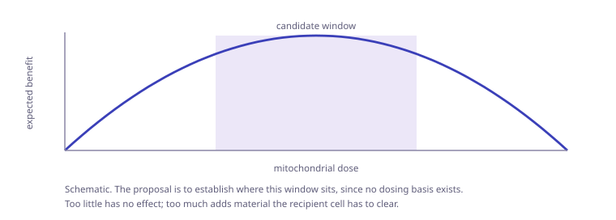

A review of mitochondrial transfer carrying what appears to be the first combined ethical, environmental and market assessment of the field, a dose-modeling proposal, and a case for revisiting mitochondrial transfer in IVF.
Structure
- Ethical assessment.
- Environmental impact assessment.
- Market assessment.
- Dose-modeling proposal.
- A case for reopening mitochondrial transfer in IVF.
- The dose-modeling, environmental, ethical and market analyses sit in chapters 4 and 5.

Dose modeling
- No dosing basis currently exists for mitochondrial transfer.
- Too small a dose produces no effect. Too large a dose adds material the recipient cell has to clear.
- A usable window is therefore expected, and the proposal is to establish where it sits.

How it grew
- Started as a short piece.
- Rewritten roughly five times as conversations with subject experts changed the scope each round.
- The result is one argument rather than five separate notes.
Status
- Analysis complete.
- Writing needs tightening.
- Figures and ordering still to be finalised.